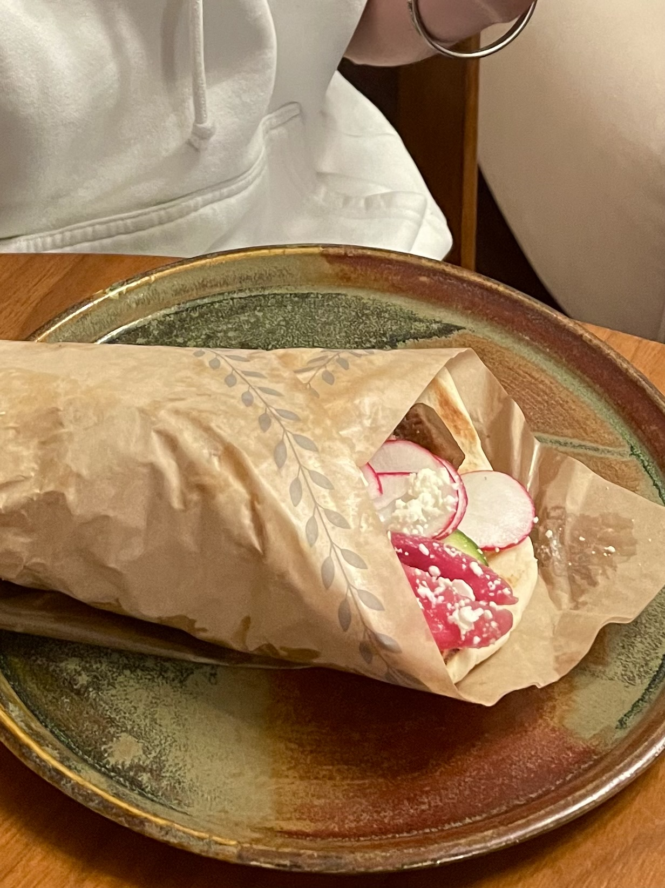

The hands down most offensive question someone can ask is "Are you an only child?" This devastating question roots from either personality observations (the worst) or because they have yet to see any siblings around. As someone who has gotten asked this question, I'd like to think that it is because of the second reason, and I have a 9 and 7 year age gap to back it up. My oldest sister is a dedicated PhD student living in San Francisco with her boyfriend who owns an AI startup. If it sounds like every other 26 year old you know of is living in San Francisco, it's because they are. They're flocking to SF like the children in the horror movie "Weapons" at 2:17 AM. I try to visit my sister in her city about twice a year to fight the only child allegations and keep the generational differences at a controlled low. My most recent trip was a full immersion into what her life was like since we did not have an additional adventure planned like other times. (e.g. Heat exhaustion at Pinnacles, driving to L.A., hiking for 26 miles in one day)
My flight there was peaceful for the most part. There is this special little game I like to play called, how long can my feeble phone battery last to keep me on my toes. I left my house with a good 33%. Even though I had my charger in my carry-on suitcase the whole flight, I didn't have enough incentive to get out of my middle row seat, open the overhead compartment, and take out my charger. I pivoted to my summer math homework (the only next available option) and faced the fact that I had retained little math over the summer. The plane landed… safely, I wouldn't say smoothly, and I called an uber with 10% I had left. Luckily, the airport is not too far from my sister's home and the uber driver was not a serial killer so I made it with 4% left. I got home at around 8:00 pm and immediately rushed to plug my phone in. My sister's boyfriend and his coWERKers toiled away at their computers and zoom calls, all the while making jokes about a random tweet they found funny. 8:30 rolled around and my sister was still not home. Finally at 9:00 pm, the diva came home and we went out to get gyros for dinner. 
Girl dinner Why not just make something at home you ask? Well, now we are getting to the special segment called "THE FRIDGE!" This is a pivotal key detail for how to truly live like a 26 year old whose income comes from a public university or a self-employed startup. These people have no time or money to consistently go to the grocery store so their food consists of condiments, beans, and a lot of coffee. Imagine almond mom core but they still have eggo waffles in the freezer. Peanut butter is their main form of calories and they do not have bread. Additionally, half of the things in the fridge are not even theirs, due to the startup hosting 3 other men in their apartment. (Don't worry, they are getting their own office space soon.)
The next day, my sister and I woke up bright and early at 6:30 to go run in the beautiful, gigantic Golden Gate Park. Clearly we were not the only ones with this idea as it seemed like we ran with the masses. Say what they will about Colorado being the fittest city in the U.S., but San Francisco has to be a close second. Then, she got ready for work and headed out on her bike. That Friday she told me she would be back early. I was thinking she meant maybe 2:30 or 3:00, but it meant more like leaving at 5:00 from work instead of 8:30. During that time, I worked on summer homework and writing for college applications, which has pretty much become my life these days. As a break, I was assigned the mission of getting quarters for the washing and drying machine. The situation was dire seeing as the couple was rewearing socks for the third day in a row. I got a $20 bill and set out to Whole Foods. I stared jealously in line at the girls dressed in cute cowboy boots since they were going to a Zach Bryan concert that was $199 without resale so I couldn't go. I reached the customer service booth, hopeful for a coin to spare, when the checkout lady said "Sorry, we're fresh out, you should come earlier next time." I started my woeful walk home, my feet dragged with disappointment. Mission failed. However, we had no time to waste, my sister had to co-host a "cakes and cocktails" party with her friend. We raced to the target to buy the supplies and bussed over to the friends house. I met many of my sister's friends from her cohort and experienced two mini power outages due to the famous San Francisco wind. One of the people there had just finished her PhD and was going to teach chemistry at a high school. She asked me if there was any "new slang" she had to know and so I taught her some brain rot. If I'm being honest, I have lost my touch ever since I deleted Tiktok, but some of these references, you just can't even begin to explain. How does one describe the elaborateness of a Labubu or a performative macha man? I wished her good luck and not long after, went home since it was getting late.
The next day, me, my sister, and her boyfriend all went to get brunch at a place with possibly the best, fluffiest, peach cobbler french toast I've ever had.
The contender for the best french toast ever I must say, in comparison to Seattle, San Francisco has much better restaurants on average. We murdered our legs at the gym, fully knowing we were going on a hike the next day, and got food for the tailgate at the Bay FC game we were going to.
However, we first met at my sister's friend's house since she was driving us there. This friend lived at what seems like the top of every single hill in San Francisco, each with a 25% grade or more. What made this even more impressive was knowing that my sister's friend bikes those hills coming back from work every day. These 26 year olds are the most fit people I know; One is training to win an olympic distance triathlon and the other teaches HIIT classes at a gym studio. Casually signing up for marathons is normal here, and people make their weekends Tuesdays and Wednesdays to go skiing during the winters.
All in all, these people in their twenties are incredibly hardworking, dedicated, and very silly people. They have good intentions even if they use terms like "rizz" in a questionable manner. The time they spend to reach their goals is unmatched, but I don't think putting some of that time aside to have food in the fridge and clean clothes would hurt. If you are a 26-year-old reading this, don't forget to treat yourself. :)